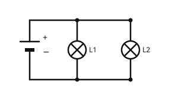

Die Parallelschaltung
Mit einem KI-Tutor lernen
Ein KI-Tutor erklärt dir diese Seite und hilft dir bei den Übungen. Wähl deinen Assistenten:
Mit Claude öffnen Mit ChatGPT öffnen Mit Mistral Vibe öffnen
Du nutzt dein eigenes Konto beim Anbieter. Der Assistent ist kein Angebot von lernapps.net: lernapps liefert nur Inhalte und Übungen. Die Wahl gilt für alle Seiten, nur auf diesem Gerät.
Der zweite Weg
In der Reihenschaltung gehen alle Lampen aus, wenn eine ausfällt. Zu Hause ist das anders: Fällt eine Lampe aus, leuchten die anderen weiter. Das liegt an einer zweiten Art, Lampen zu schalten, der Parallelschaltung.
Danach kannst du eine Parallelschaltung aufbauen und erklären, was passiert, wenn ein Zweig ausfällt.
Mehrere Wege für den Strom
In der Parallelschaltung liegen die Lampen nebeneinander. Von der Batterie aus gibt es mehrere Wege, einen für jede Lampe. Diese Wege heißen Zweige. An den Punkten, wo der Weg sich teilt und wieder zusammenkommt, sind in der Zeichnung dicke Punkte.

Die Lampen L1 und L2 haben je einen eigenen Weg. Zähle die möglichen Wege des Stroms.
Quelle: eigene Zeichnung. Lizenz: CC-BY-4.0.- Parallelschaltung
In einer Parallelschaltung liegen die Bauteile nebeneinander in getrennten Zweigen, sodass der Strom mehrere Wege hat.
Ausfall: Fällt eine Lampe aus, ist nur ihr eigener Zweig unterbrochen. Der andere Zweig bleibt geschlossen, und seine Lampe leuchtet weiter.
Messwerte: Die Tabelle zeigt Beispielwerte bei zwei gleichen Lampen und einer 6-V-Batterie.
| Messstelle | Messwert |
|---|---|
| Spannung an der Batterie | 6 V |
| Spannung an L1 | 6 V |
| Spannung an L2 | 6 V |
| Stromstärke an der Batterie | 0,4 A |
| Stromstärke in Zweig L1 | 0,2 A |
| Stromstärke in Zweig L2 | 0,2 A |
Aus der Tabelle liest du zwei Regeln ab:
- Die Spannung ist an jedem Zweig gleich der Spannung der Batterie.
- Die Stromstärke der Batterie teilt sich auf die Zweige auf: 0,2 A und 0,2 A ergeben zusammen die 0,4 A.
Beispiel: Die Lampen im Zimmer
Warum leuchtet die zweite Lampe weiter?
In einem Zimmer hängen zwei Lampen parallel. Eine ist durchgebrannt.
- Jede Lampe hat ihren eigenen Zweig mit einem eigenen Weg zur Batterie.
- Die durchgebrannte Lampe unterbricht nur ihren Zweig.
- Der andere Zweig ist weiter geschlossen, und der Strom fließt dort.
- Darum leuchtet die zweite Lampe weiter.
Übung
Übung
Lösung
Beide leuchten weiter. richtige Antwort
Der Zweig von L2 ist unterbrochen, die Zweige von L1 und L3 sind es nicht. Dort fließt weiter Strom.
Beide gehen aus.
So wäre es bei einer Reihenschaltung. Hier hat jede Lampe einen eigenen Zweig.
Nur L1 leuchtet weiter, weil sie vor L2 liegt.
Die Lage spielt keine Rolle. Jeder Zweig ist ein eigener Weg und unabhängig von den anderen.
In der Parallelschaltung ist jeder Zweig ein eigener Weg. Fällt einer aus, arbeiten die anderen weiter.
Mehr dazu:
Übung
Lösung
Richtige Antwort: Die Aussage stimmt.
Jeder Zweig hängt an denselben beiden Punkten wie die Batterie. Darum ist die Spannung an jeder Lampe so groß wie die der Batterie.
Mehr dazu:
Übung
Lösung
Sie ist so groß wie alle Zweigströme zusammen. richtige Antwort
Der Strom der Batterie teilt sich auf die Zweige auf, wie 0,2 A und 0,2 A zusammen die 0,4 A ergeben.
Sie ist so groß wie der Strom in einem einzigen Zweig.
Die Batterie versorgt alle Zweige, darum ist ihr Strom größer als der in einem Zweig.
Sie ist kleiner als der Strom in jedem Zweig.
Dann würde Strom aus dem Nichts entstehen. Der Strom der Batterie teilt sich nur auf.
In der Parallelschaltung teilt sich die Stromstärke der Batterie auf die Zweige auf.
Mehr dazu:
Übung
Lösung
Parallelschaltung mit je einem Schalter im Zweig richtige Antwort
Jeder Zweig kann einzeln geöffnet werden, ohne die andere Lampe zu stören.
Reihenschaltung mit einem Schalter
Ein Schalter in Reihe schaltet beide Lampen zusammen aus.
Reihenschaltung mit zwei Schaltern
Auch hier unterbricht jeder der beiden Schalter den einzigen Weg und schaltet beide Lampen aus.
Wer Lampen einzeln schalten will, braucht eigene Zweige, also eine Parallelschaltung.
Mehr dazu: